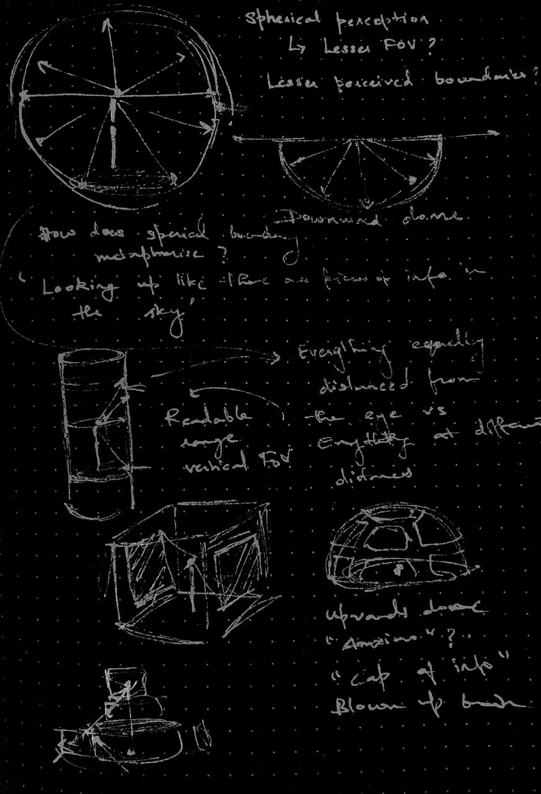
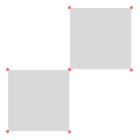

Strictly 2-dimensional media offers an object-like quality. You can choose to look away, move away or closer and so on. They're absolutely positioned in space or they're a fraction of an individual's field of view. If we move a step closer, 2-dimensional media could also be juxtaposed over our sight removing the absolute positioning in space as a character. They can also be placed 'around' on the internal faces of a cube 'surrounding' one's sight. When we move away from a cube to a sphere, we start to warp images. The notion of 2-dimensionality stands three primary challenges here. First, the image's composition, although is 2-D requires manipulation in the 3rd dimension. For images to be 'mapped' on to a non-planar surface, a referrant in 3-D space is required. A 3rd dimension's imagination helps make complete use of spatial affordances.

rough line of thought
What can a spatial arrangement afford?
Now that we can design elements of an environment that can be stitched together for facilitating an experience, what does this ability afford for our senses?
In 3-Dimensional space, primary extensions of activity involve looking and walking around.
If you look around yourself now, you might find corners and edges formed by walls or an open sky where trees and buildings slowly diminish in scale.
This frame poses an interesting question, how do we posit true ‘infinity’ when it cannot be perceived in totality? or is there a quality of ‘totality’ at all to infinity?
With increased degrees of freedom, spatial arrangement enables perception of boundaries alongside movement.

What does it mean to use a ‘switching’ mechanism and 3-D environment?
Are boundaries perceived as ‘ends’, ‘corners’, ‘limits’ to an extension of space?
Is it an innate property of space or the observer?
Constructing walls, edges and corners lead to a ‘perceived’ boundary. Using a surface ‘suggests’ that someone could walk and move. The walk must provide something in order to for an individual to continue ‘walking’.